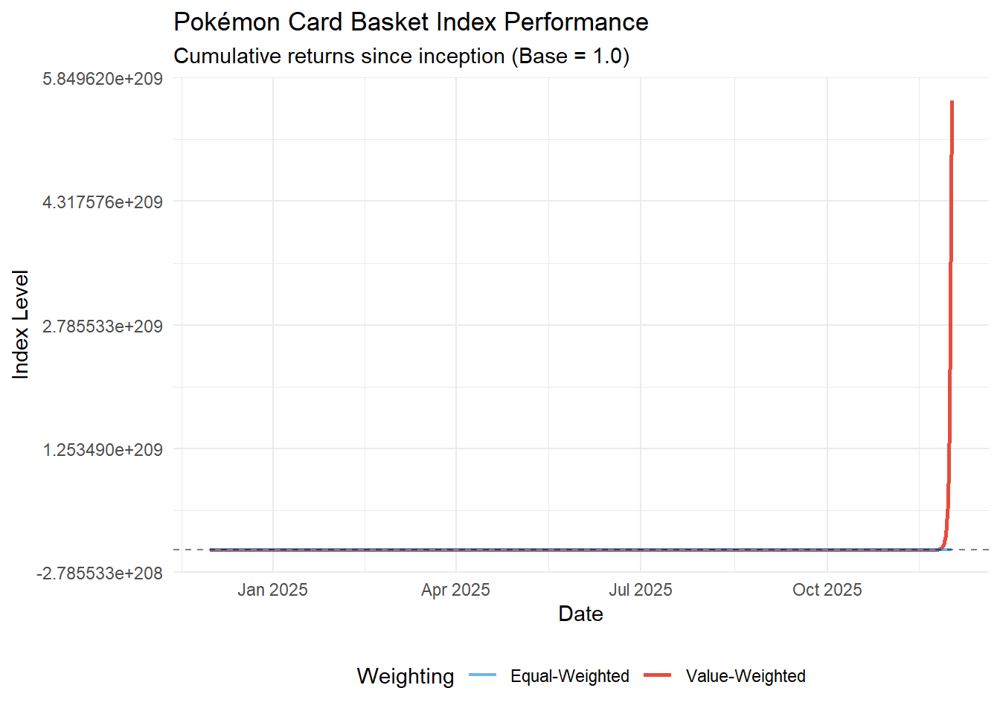
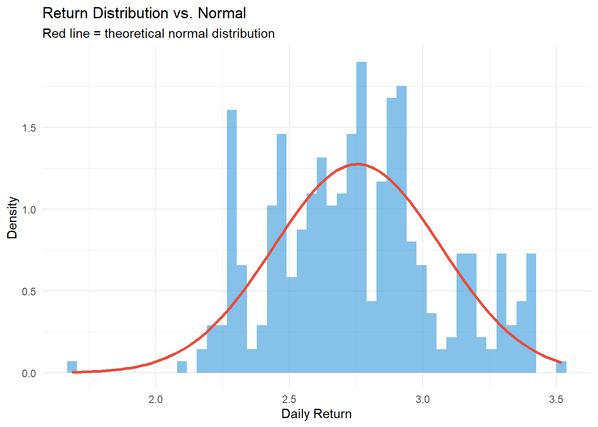
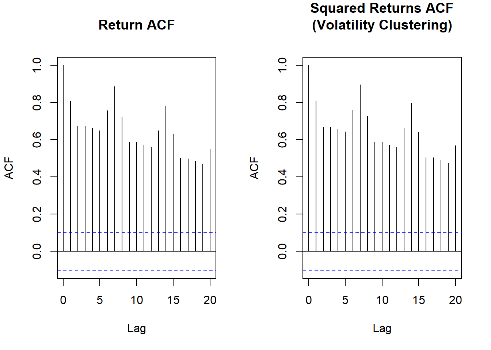
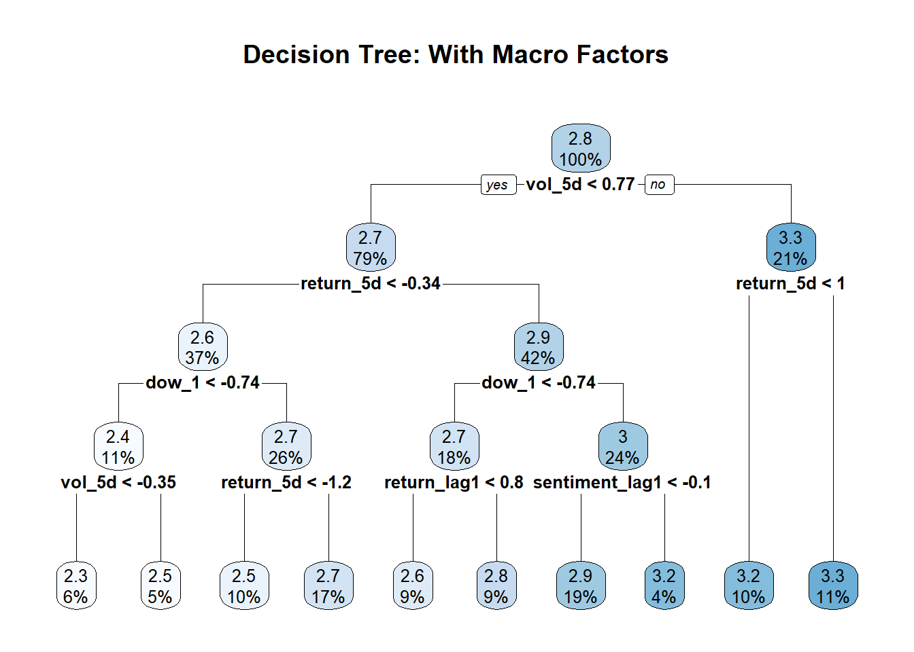
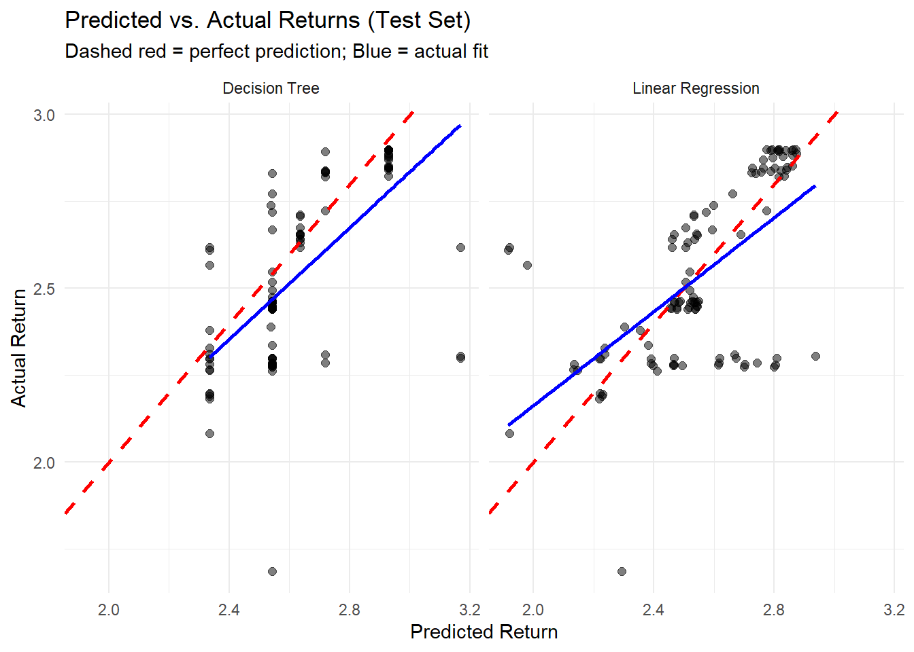
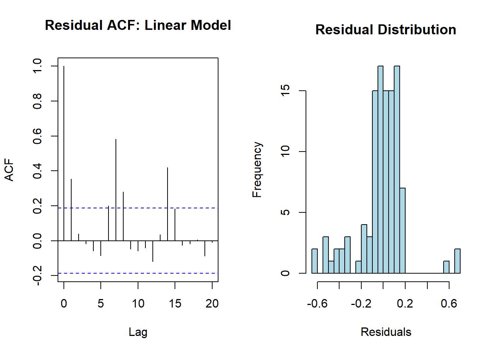
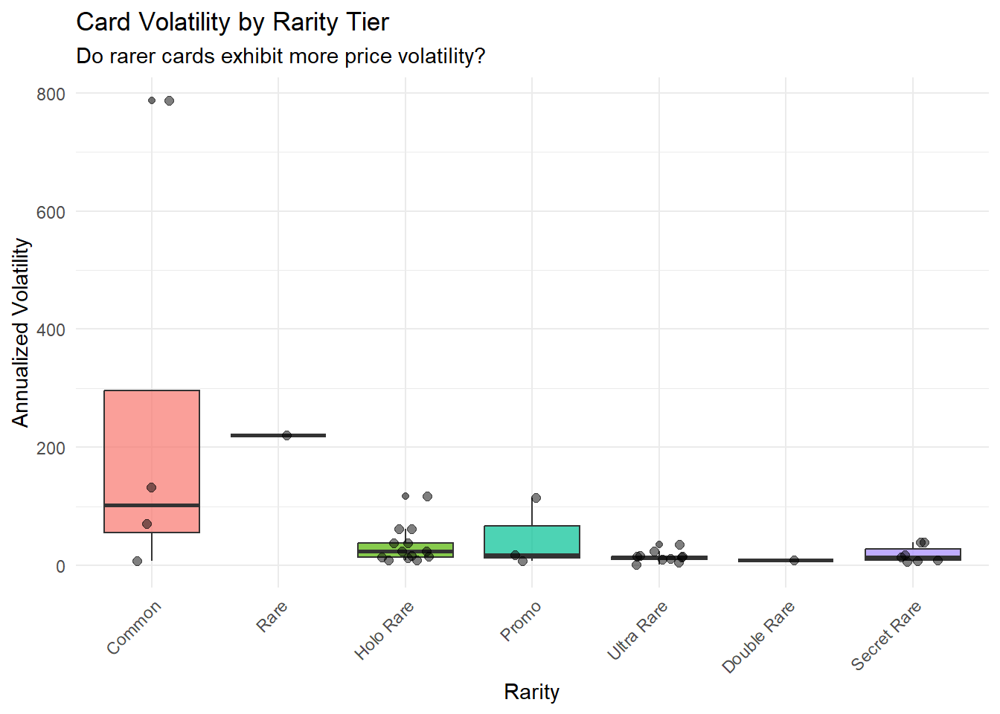
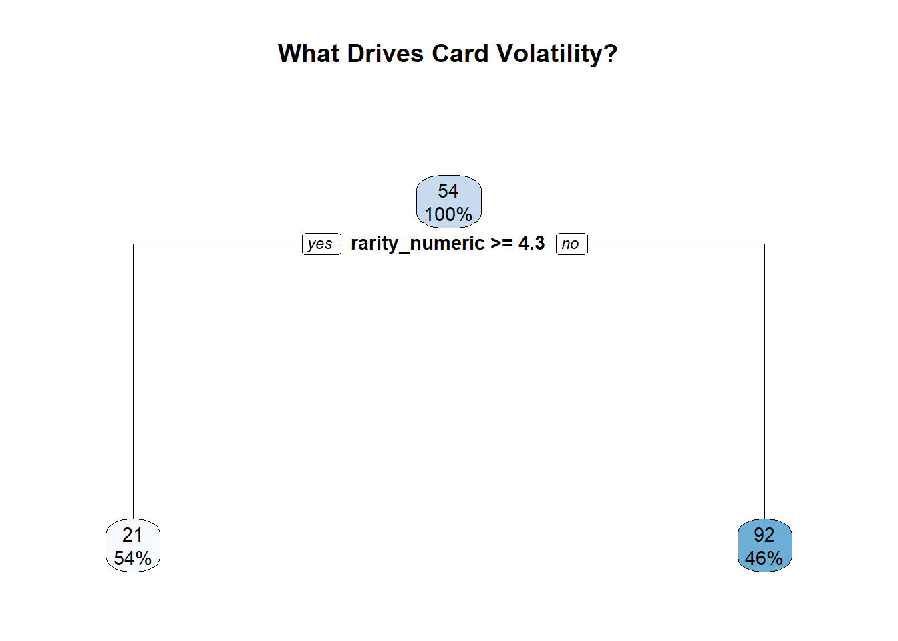

Code
library(tidyverse)
library(tidymodels)
library(lubridate)
library(zoo)
library(rpart.plot)
library(gt)
library(broom)
# For reproducibility
set.seed(42)Index Behavior, Predictability & Risk Factors Using Recursive Methods
library(tidyverse)
library(tidymodels)
library(lubridate)
library(zoo)
library(rpart.plot)
library(gt)
library(broom)
# For reproducibility
set.seed(42)Can Pokémon cards be analyzed like financial instruments?
This analysis investigates whether a portfolio of ~40 Pokémon trading cards exhibits market-like behavior and explores whether returns are predictable. We apply two key methodologies from quantitative finance:
rsample → recipes → parsnip → yardstickKey Questions:
Each CSV file contains card metadata at the top followed by daily price history. We parse each file and combine them into a single analytical dataset.
# Function to parse a single card file
parse_card_file <- function(filepath, card_id) {
all_lines <- readLines(filepath, warn = FALSE)
# Find section markers
card_info_start <- which(grepl("CARD INFORMATION", all_lines))[1]
history_start <- which(grepl("PRICE HISTORY", all_lines))[1]
# Extract card metadata
card_lines <- all_lines[(card_info_start + 1):(history_start - 3)]
card_lines <- card_lines[card_lines != ""]
# Parse card info
card_name <- str_extract(card_lines[grepl("Card Name", card_lines)], "(?<=Card Name,).*")
set_name <- str_extract(card_lines[grepl("Set Name", card_lines)], "(?<=Set Name,).*")
rarity <- str_extract(card_lines[grepl("Rarity", card_lines)], "(?<=Rarity,).*")
# Extract price history
price_history_raw <- read.csv(
text = paste(all_lines[(history_start + 1):length(all_lines)], collapse = "\n"),
header = TRUE,
stringsAsFactors = FALSE
)
# Clean price history
price_history <- price_history_raw %>%
select(1:5) %>%
rename(Date = 1, Condition = 2, Price = 3, Volume = 4, DataType = 5) %>%
mutate(
Date = as.Date(substr(as.character(Date), 1, 10)),
Price = as.numeric(gsub("[\\$,]", "", Price)),
Volume = as.numeric(Volume),
card_id = card_id,
card_name = trimws(card_name),
set_name = trimws(set_name),
rarity = trimws(rarity)
) %>%
filter(!is.na(Price), !is.na(Date))
return(price_history)
}
# Load all card files
file_path <- "C:/Users/kenne/Downloads/Pokemon Project/"
df_list <- list()
for (i in 1:40) {
filename <- paste0(file_path, "project_data_", i, ".csv")
if (file.exists(filename)) {
df_list[[i]] <- parse_card_file(filename, i)
cat("Loaded file", i, "\n")
} else {
cat("Warning: File", i, "not found\n")
}
}Loaded file 1
Loaded file 2
Loaded file 3
Loaded file 4
Loaded file 5
Loaded file 6
Loaded file 7
Loaded file 8
Loaded file 9
Loaded file 10
Loaded file 11
Loaded file 12
Loaded file 13
Loaded file 14
Loaded file 15
Loaded file 16
Loaded file 17
Loaded file 18
Warning: File 19 not found
Loaded file 20
Loaded file 21
Loaded file 22
Loaded file 23
Loaded file 24
Loaded file 25
Loaded file 26
Loaded file 27
Loaded file 28
Loaded file 29
Loaded file 30
Loaded file 31
Loaded file 32
Loaded file 33
Loaded file 34
Loaded file 35
Loaded file 36
Loaded file 37
Loaded file 38
Loaded file 39
Loaded file 40 # Combine all cards
df <- bind_rows(df_list)
cat("\nTotal rows loaded:", nrow(df), "\n")
Total rows loaded: 68076 cat("Number of unique cards:", length(unique(df$card_id)), "\n")Number of unique cards: 39 For consistency and liquidity, we focus on “Near Mint” condition cards.
df <- df %>%
# filter(Condition == "Near Mint") %>%
arrange(card_id, Date)
# Summary by card
card_summary <- df %>%
group_by(card_id, card_name, rarity) %>%
summarise(
n_obs = n(),
min_price = min(Price),
max_price = max(Price),
mean_price = mean(Price),
price_range_pct = (max_price - min_price) / min_price * 100,
.groups = "drop"
)
card_summary %>%
arrange(desc(mean_price)) %>%
head(15) %>%
gt() %>%
fmt_currency(columns = c(min_price, max_price, mean_price), currency = "USD") %>%
fmt_number(columns = price_range_pct, decimals = 1, suffix = "%") %>%
cols_label(
card_id = "ID", card_name = "Card Name", rarity = "Rarity",
n_obs = "Days", min_price = "Min", max_price = "Max",
mean_price = "Avg", price_range_pct = "Range %"
) %>%
tab_header(title = "Top 15 Cards by Average Price")| Top 15 Cards by Average Price | |||||||
|---|---|---|---|---|---|---|---|
| ID | Card Name | Rarity | Days | Min | Max | Avg | Range % |
| 4 | Charizard | Holo Rare | 1830 | $225.00 | $5,495.00 | $1,944.29 | 2.3% |
| 12 | Gyarados Star (Delta Species) | Ultra Rare | 1830 | $285.00 | $1,999.99 | $1,048.12 | 601.8 |
| 30 | Umbreon VMAX (Alternate Art Secret) | Secret Rare | 1830 | $295.70 | $2,285.40 | $1,029.54 | 672.9 |
| 40 | Mewtwo Star | Ultra Rare | 1464 | $250.98 | $2,001.98 | $872.07 | 697.7 |
| 14 | Latias Star | Ultra Rare | 1098 | $274.95 | $2,300.00 | $777.53 | 736.5 |
| 15 | Lugia | Holo Rare | 1830 | $268.86 | $1,799.99 | $726.66 | 569.5 |
| 23 | Shining Tyranitar | Secret Rare | 1830 | $246.85 | $1,700.00 | $713.36 | 588.7 |
| 22 | Shining Mewtwo | Secret Rare | 1830 | $126.64 | $896.01 | $589.93 | 607.5 |
| 20 | Rocket's Mewtwo ex | Ultra Rare | 1830 | $153.54 | $1,999.99 | $562.15 | 1.2% |
| 17 | Mewtwo | Holo Rare | 1830 | $205.51 | $900.00 | $469.92 | 337.9 |
| 11 | Gyarados (H10) | Holo Rare | 1098 | $209.00 | $1,200.00 | $439.57 | 474.2 |
| 39 | Pikachu VMAX | Ultra Rare | 732 | $262.50 | $362.48 | $294.24 | 38.1 |
| 29 | Tyranitar (H28) | Holo Rare | 1830 | $60.00 | $615.95 | $278.99 | 926.6 |
| 5 | Charizard | Holo Rare | 1830 | $112.21 | $494.04 | $268.99 | 340.3 |
| 38 | Pikachu with Grey Felt Hat | Promo | 1830 | $50.00 | $649.30 | $251.63 | 1.2% |
Commentary: The price distribution shows substantial heterogeneity—from cards worth a few dollars to those over $2,000. This mirrors real financial markets where asset prices span multiple orders of magnitude.
A true market index typically displays:
We create two indices similar to how market indices are constructed:

Commentary: The divergence between value-weighted and equal-weighted indices tells a story. If high-priced “blue chip” cards behave differently from cheaper cards, the indices will separate—similar to how large-cap stocks often exhibit lower volatility than small-caps.
returns <- basket_index$basket_return
stats_table <- tibble(
Statistic = c("Mean (daily)", "Std Dev (daily)", "Annualized Vol",
"Skewness", "Kurtosis", "Min", "Max", "Sharpe (ann.)"),
Value = c(
mean(returns, na.rm = TRUE),
sd(returns, na.rm = TRUE),
sd(returns, na.rm = TRUE) * sqrt(252),
e1071::skewness(returns, na.rm = TRUE),
e1071::kurtosis(returns, na.rm = TRUE),
min(returns, na.rm = TRUE),
max(returns, na.rm = TRUE),
mean(returns, na.rm = TRUE) / sd(returns, na.rm = TRUE) * sqrt(252)
)
) %>%
mutate(Value = round(Value, 4))
stats_table %>%
gt() %>%
tab_header(title = "Basket Index: Statistical Properties")| Basket Index: Statistical Properties | |
|---|---|
| Statistic | Value |
| Mean (daily) | 2.7548 |
| Std Dev (daily) | 0.3130 |
| Annualized Vol | 4.9683 |
| Skewness | 0.1636 |
| Kurtosis | -0.3228 |
| Min | 1.6866 |
| Max | 3.5200 |
| Sharpe (ann.) | 139.7249 |
ggplot(basket_index, aes(x = basket_return)) +
geom_histogram(aes(y = after_stat(density)), bins = 50, fill = "#3498db", alpha = 0.6) +
stat_function(fun = dnorm,
args = list(mean = mean(returns, na.rm = TRUE),
sd = sd(returns, na.rm = TRUE)),
color = "#e74c3c", linewidth = 1.2) +
labs(
title = "Return Distribution vs. Normal",
subtitle = "Red line = theoretical normal distribution",
x = "Daily Return", y = "Density"
) +
theme_minimal()
Commentary:
par(mfrow = c(1, 2))
acf(returns, lag.max = 20, main = "Return ACF", na.action = na.pass)
acf(returns^2, lag.max = 20, main = "Squared Returns ACF\n(Volatility Clustering)", na.action = na.pass)
par(mfrow = c(1, 1))Commentary:
kurt <- e1071::kurtosis(returns, na.rm = TRUE)
skew <- e1071::skewness(returns, na.rm = TRUE)
ann_vol <- sd(returns, na.rm = TRUE) * sqrt(252)
tibble(
Property = c("Fat Tails (Kurtosis > 3)",
"Negative Skewness",
"High Volatility (>20% ann.)",
"Volatility Clustering"),
Expected = c("Yes", "Yes", "Yes", "Yes"),
Observed = c(
ifelse(kurt > 3, paste0("✓ Yes (", round(kurt, 2), ")"), paste0("✗ No (", round(kurt, 2), ")")),
ifelse(skew < 0, paste0("✓ Yes (", round(skew, 2), ")"), paste0("✗ No (", round(skew, 2), ")")),
ifelse(ann_vol > 0.20, paste0("✓ Yes (", round(ann_vol*100, 1), "%)"), paste0("✗ No (", round(ann_vol*100, 1), "%)")),
"Check ACF plot"
)
) %>%
gt() %>%
tab_header(
title = "Does the Pokémon Card Basket Behave Like a Market Index?",
subtitle = "Comparison against typical financial market properties"
)| Does the Pokémon Card Basket Behave Like a Market Index? | ||
|---|---|---|
| Comparison against typical financial market properties | ||
| Property | Expected | Observed |
| Fat Tails (Kurtosis > 3) | Yes | ✗ No (-0.32) |
| Negative Skewness | Yes | ✗ No (0.16) |
| High Volatility (>20% ann.) | Yes | ✓ Yes (496.8%) |
| Volatility Clustering | Yes | Check ACF plot |
We now apply the Tidymodels workflow from the class notes to predict next-day basket returns. The workflow follows:
rsample: Data sampling (train/test split)recipes: Feature engineering pipelineparsnip: Model specification and fittingyardstick: Model evaluation metricsWe create three categories of predictors:
# Consumer Sentiment Index (Monthly from FRED)
consumer_sentiment <- tidyquant::tq_get(
"UMCSENT",
get = "economic.data",
from = min(basket_index$Date) - days(90),
to = max(basket_index$Date)
) %>%
rename(Date = date, sentiment_index = price) %>%
select(Date, sentiment_index)
cat("Consumer Sentiment observations:", nrow(consumer_sentiment), "\n")Consumer Sentiment observations: 13 # S&P 500 via SPY ETF (Daily)
spy_data <- tidyquant::tq_get(
"SPY",
get = "stock.prices",
from = min(basket_index$Date) - days(30),
to = max(basket_index$Date)
) %>%
mutate(spy_return = (adjusted - lag(adjusted)) / lag(adjusted)) %>%
rename(Date = date) %>%
select(Date, spy_close = adjusted, spy_return)
cat("SPY observations:", nrow(spy_data), "\n")SPY observations: 269 Consumer sentiment is monthly—we fill-forward to daily. SPY needs handling for weekends when card trading may occur.
# Create complete daily date sequence
all_dates <- tibble(
Date = seq(min(basket_index$Date), max(basket_index$Date), by = "day")
)
# Expand monthly sentiment to daily (fill forward)
sentiment_without_regards <- tibble(
Date = seq(min(consumer_sentiment$Date), max(all_dates$Date), by = "day")
) %>%
left_join(consumer_sentiment, by = "Date") %>%
arrange(Date) %>%
tidyr::fill(sentiment_index, .direction = "down") %>% # Fill forward FIRST
tidyr::fill(sentiment_index, .direction = "up") # Fill any leading NAs
# THEN: Join to your basket dates (already filled!)
sentiment_daily <- all_dates %>%
left_join(sentiment_without_regards, by = "Date")
# SPY: fill weekends/holidays, set return to 0 on non-trading days
spy_daily <- all_dates %>%
left_join(spy_data, by = "Date") %>%
tidyr::fill(spy_close, .direction = "down") %>%
mutate(spy_return = replace_na(spy_return, 0))
cat("Sentiment daily:", nrow(sentiment_daily), "| SPY daily:", nrow(spy_daily), "\n")Sentiment daily: 366 | SPY daily: 366 Critical: All rolling features are LAGGED to avoid lookahead bias.
basket_features <- basket_index %>%
arrange(Date) %>%
left_join(sentiment_daily, by = "Date") %>%
left_join(spy_daily, by = "Date") %>%
mutate(
# TARGET
return_next = lead(basket_return),
# INTERNAL FEATURES (lagged)
return_lag1 = lag(basket_return, 1),
return_lag2 = lag(basket_return, 2),
return_lag3 = lag(basket_return, 3),
return_lag5 = lag(basket_return, 5),
return_5d = lag(zoo::rollsum(basket_return, 5, fill = NA, align = "right"), 1),
return_10d = lag(zoo::rollsum(basket_return, 10, fill = NA, align = "right"), 1),
vol_5d = lag(zoo::rollapply(basket_return, 5, sd, fill = NA, align = "right"), 1),
vol_10d = lag(zoo::rollapply(basket_return, 10, sd, fill = NA, align = "right"), 1),
# EXTERNAL MACRO FEATURES (lagged)
sentiment_lag1 = lag(sentiment_index, 1),
sentiment_change = lag(sentiment_index, 1) - lag(sentiment_index, 30),
spy_lag1 = lag(spy_return, 1),
spy_5d = lag(zoo::rollsum(spy_return, 5, fill = NA, align = "right"), 1),
spy_vol_5d = lag(zoo::rollapply(spy_return, 5, sd, fill = NA, align = "right"), 1),
# CALENDAR FEATURES
dow = wday(Date, label = TRUE),
is_month_end = ifelse(day(Date) >= 28, 1, 0),
is_holiday_season = ifelse(month(Date) %in% c(11, 12), 1, 0)
) %>%
filter(!is.na(return_next), !is.na(return_lag1), !is.na(spy_lag1))
cat("Feature set:", nrow(basket_features), "obs x", ncol(basket_features), "columns\n")Feature set: 364 obs x 28 columnsglimpse(basket_features)Rows: 364
Columns: 28
$ Date <date> 2024-12-02, 2024-12-03, 2024-12-04, 2024-12-05, 2…
$ total_value <dbl> 49613.58, 49676.84, 49709.86, 49742.96, 49775.95, …
$ basket_return <dbl> 2.847785, 2.963306, 3.401531, 3.398920, 3.396504, …
$ equal_weight_return <dbl> 1.220751, 1.801754, 2.052647, 2.052182, 2.051858, …
$ n_cards <int> 186, 186, 186, 186, 186, 186, 186, 186, 186, 186, …
$ total_volume <dbl> 167, 0, 0, 0, 0, 0, 0, 558, 0, 0, 0, 0, 0, 0, 697,…
$ basket_level <dbl> 1.739209e+01, 6.893015e+01, 3.033982e+02, 1.334624…
$ ew_level <dbl> 7.012709e+00, 1.964789e+01, 5.997807e+01, 1.830640…
$ sentiment_index <dbl> 74, 74, 74, 74, 74, 74, 74, 74, 74, 74, 74, 74, 74…
$ spy_close <dbl> 596.3795, 596.6561, 600.3611, 599.3731, 600.5093, …
$ spy_return <dbl> 1.792364e-03, 4.638176e-04, 6.209533e-03, -1.64563…
$ return_next <dbl> 2.963306, 3.401531, 3.398920, 3.396504, 3.394259, …
$ return_lag1 <dbl> 3.520025, 2.847785, 2.963306, 3.401531, 3.398920, …
$ return_lag2 <dbl> NA, 3.520025, 2.847785, 2.963306, 3.401531, 3.3989…
$ return_lag3 <dbl> NA, NA, 3.520025, 2.847785, 2.963306, 3.401531, 3.…
$ return_lag5 <dbl> NA, NA, NA, NA, 3.520025, 2.847785, 2.963306, 3.40…
$ return_5d <dbl> NA, NA, NA, NA, 16.13157, 16.00805, 16.55452, 16.9…
$ return_10d <dbl> NA, NA, NA, NA, NA, NA, NA, NA, NA, 32.06642, 31.9…
$ vol_5d <dbl> NA, NA, NA, NA, 0.2996739155, 0.2733424647, 0.1943…
$ vol_10d <dbl> NA, NA, NA, NA, NA, NA, NA, NA, NA, 0.2769729, 0.2…
$ sentiment_lag1 <dbl> 74, 74, 74, 74, 74, 74, 74, 74, 74, 74, 74, 74, 74…
$ sentiment_change <dbl> NA, NA, NA, NA, NA, NA, NA, NA, NA, NA, NA, NA, NA…
$ spy_lag1 <dbl> 0.000000e+00, 1.792364e-03, 4.638176e-04, 6.209533…
$ spy_5d <dbl> NA, NA, NA, NA, 6.820078e-03, 8.715675e-03, 6.9233…
$ spy_vol_5d <dbl> NA, NA, NA, NA, 0.002974535, 0.002876404, 0.002978…
$ dow <ord> Mon, Tue, Wed, Thu, Fri, Sat, Sun, Mon, Tue, Wed, …
$ is_month_end <dbl> 0, 0, 0, 0, 0, 0, 0, 0, 0, 0, 0, 0, 0, 0, 0, 0, 0,…
$ is_holiday_season <dbl> 1, 1, 1, 1, 1, 1, 1, 1, 1, 1, 1, 1, 1, 1, 1, 1, 1,…df_split <- basket_features %>%
rsample::initial_time_split(prop = 0.70)
df_train <- rsample::training(df_split)
df_test <- rsample::testing(df_split)
cat("Training:", nrow(df_train), "obs (",
as.character(min(df_train$Date)), "to", as.character(max(df_train$Date)), ")\n")Training: 254 obs ( 2024-12-02 to 2025-08-12 )cat("Testing:", nrow(df_test), "obs (",
as.character(min(df_test$Date)), "to", as.character(max(df_test$Date)), ")\n")Testing: 110 obs ( 2025-08-13 to 2025-11-30 )recipe_pipeline <- recipes::recipe(
return_next ~ return_lag1 + return_lag2 + return_lag3 +
return_5d + vol_5d +
sentiment_lag1 + spy_lag1 + spy_5d +
dow + is_holiday_season,
data = df_train
) %>%
recipes::step_impute_median(all_numeric_predictors()) %>%
recipes::step_dummy(dow, one_hot = FALSE) %>%
recipes::step_normalize(all_numeric_predictors()) %>%
recipes::step_zv(all_predictors()) %>%
recipes::step_corr(all_numeric_predictors(), threshold = 0.9) %>%
recipes::prep()
train_baked <- recipes::bake(recipe_pipeline, df_train)
test_baked <- recipes::bake(recipe_pipeline, df_test)
cat("Baked training:", nrow(train_baked), "x", ncol(train_baked), "\n")Baked training: 254 x 16 cat("Baked testing:", nrow(test_baked), "x", ncol(test_baked), "\n")Baked testing: 110 x 16 glimpse(train_baked)Rows: 254
Columns: 16
$ return_lag1 <dbl> 2.32789983, -0.01461722, 0.38793082, 1.91498904, 1.9…
$ return_lag2 <dbl> -0.23435748, 2.33677384, -0.02102443, 0.38414960, 1.…
$ return_lag3 <dbl> -0.22164835, -0.22164835, 2.34058091, -0.02567395, 0…
$ return_5d <dbl> -0.02977834, -0.02977834, -0.02977834, -0.02977834, …
$ vol_5d <dbl> 0.07445547, 0.07445547, 0.07445547, 0.07445547, 1.93…
$ sentiment_lag1 <dbl> 1.640224, 1.640224, 1.640224, 1.640224, 1.640224, 1.…
$ spy_lag1 <dbl> -0.02709861, 0.12677112, 0.01271892, 0.50597353, -0.…
$ spy_5d <dbl> 0.10252396, 0.10252396, 0.10252396, 0.10252396, 0.21…
$ is_holiday_season <dbl> 2.727136, 2.727136, 2.727136, 2.727136, 2.727136, 2.…
$ return_next <dbl> 2.963306, 3.401531, 3.398920, 3.396504, 3.394259, 3.…
$ dow_1 <dbl> -0.993621076, -0.493859188, 0.005902699, 0.505664587…
$ dow_2 <dbl> 0.003411255, -0.863047406, -1.151866959, -0.86304740…
$ dow_3 <dbl> 1.068844495, 1.068844495, -0.008482893, -1.085810281…
$ dow_4 <dbl> -1.4836605, 0.2176928, 1.2810387, 0.2176928, -1.4836…
$ dow_5 <dbl> 1.150356727, -1.435400871, 0.001131128, 1.437663127,…
$ dow_6 <dbl> -0.52430786, 1.29999621, -1.74051058, 1.29999621, -0…Commentary: The recipe handles:
step_impute_median(): Fills NAs in macro datastep_dummy(): Converts day-of-week to binarystep_normalize(): Scales features (critical when mixing returns with sentiment indices)step_corr(): Removes highly correlated featuresmodel_lm <- parsnip::linear_reg(mode = "regression") %>%
parsnip::set_engine("lm") %>%
parsnip::fit(return_next ~ ., data = train_baked)
parsnip::tidy(model_lm) %>%
mutate(across(where(is.numeric), ~round(.x, 5))) %>%
gt() %>%
tab_header(title = "Linear Regression Coefficients (With Macro)")| Linear Regression Coefficients (With Macro) | ||||
|---|---|---|---|---|
| term | estimate | std.error | statistic | p.value |
| (Intercept) | 2.84528 | 0.00393 | 724.33945 | 0.00000 |
| return_lag1 | 0.13895 | 0.01509 | 9.20652 | 0.00000 |
| return_lag2 | 0.07113 | 0.01705 | 4.17132 | 0.00004 |
| return_lag3 | 0.06634 | 0.01820 | 3.64552 | 0.00033 |
| return_5d | -0.06368 | 0.02444 | -2.60511 | 0.00976 |
| vol_5d | 0.14550 | 0.01112 | 13.07910 | 0.00000 |
| sentiment_lag1 | -0.01774 | 0.00589 | -3.01339 | 0.00286 |
| spy_lag1 | -0.00076 | 0.00443 | -0.17180 | 0.86374 |
| spy_5d | 0.00137 | 0.00443 | 0.31060 | 0.75638 |
| is_holiday_season | 0.00587 | 0.00530 | 1.10774 | 0.26909 |
| dow_1 | 0.05162 | 0.00765 | 6.74360 | 0.00000 |
| dow_2 | -0.13506 | 0.00779 | -17.32802 | 0.00000 |
| dow_3 | 0.03872 | 0.00872 | 4.44019 | 0.00001 |
| dow_4 | 0.01843 | 0.00939 | 1.96284 | 0.05083 |
| dow_5 | -0.02490 | 0.00768 | -3.24042 | 0.00136 |
| dow_6 | 0.00864 | 0.00474 | 1.82264 | 0.06961 |
parsnip::glance(model_lm) %>%
select(r.squared, adj.r.squared, sigma, statistic, p.value) %>%
gt() %>%
fmt_number(columns = c(r.squared, adj.r.squared, sigma), decimals = 4) %>%
tab_header(title = "Linear Model Summary")| Linear Model Summary | ||||
|---|---|---|---|---|
| r.squared | adj.r.squared | sigma | statistic | p.value |
| 0.9555 | 0.9527 | 0.0626 | 340.5155 | 2.283065e-151 |
Commentary: Compare coefficient significance for internal vs macro features. Do consumer sentiment or SPY returns help predict card market movements?
model_cart <- parsnip::decision_tree(mode = "regression") %>%
parsnip::set_engine("rpart") %>%
parsnip::fit(return_next ~ ., data = train_baked)
rpart.plot(
model_cart$fit,
roundint = FALSE,
cex = 0.8,
fallen.leaves = TRUE,
extra = "auto",
main = "Decision Tree: With Macro Factors",
box.palette = "Blues"
)
Commentary: The decision tree provides interpretable splits. Variables at the top are most important. Terminal nodes show predicted returns for different “market regimes.”
# Linear model predictions
lm_pred <- model_lm %>%
stats::predict(new_data = test_baked) %>%
dplyr::bind_cols(truth = test_baked$return_next)
# Decision tree predictions
cart_pred <- model_cart %>%
stats::predict(new_data = test_baked) %>%
dplyr::bind_cols(truth = test_baked$return_next)
# Metrics using yardstick (from class notes)
cat("=== Linear Regression: Out-of-Sample Performance ===\n")=== Linear Regression: Out-of-Sample Performance ===lm_metrics <- lm_pred %>%
yardstick::metrics(truth = truth, estimate = .pred) %>%
arrange(.metric)
print(lm_metrics)# A tibble: 3 × 3
.metric .estimator .estimate
<chr> <chr> <dbl>
1 mae standard 0.141
2 rmse standard 0.212
3 rsq standard 0.382cat("\n=== Decision Tree: Out-of-Sample Performance ===\n")
=== Decision Tree: Out-of-Sample Performance ===cart_metrics <- cart_pred %>%
yardstick::metrics(truth = truth, estimate = .pred) %>%
arrange(.metric)
print(cart_metrics)# A tibble: 3 × 3
.metric .estimator .estimate
<chr> <chr> <dbl>
1 mae standard 0.145
2 rmse standard 0.215
3 rsq standard 0.434# Side-by-side comparison
bind_rows(
lm_metrics %>% mutate(model = "Linear Regression"),
cart_metrics %>% mutate(model = "Decision Tree")
) %>%
pivot_wider(names_from = .metric, values_from = .estimate) %>%
select(model, rmse, rsq, mae) %>%
gt() %>%
fmt_number(columns = c(rmse, mae), decimals = 5) %>%
fmt_percent(columns = rsq, decimals = 2) %>%
tab_header(
title = "Model Comparison: Out-of-Sample Performance",
subtitle = "Lower RMSE/MAE is better; Higher R² is better"
)| Model Comparison: Out-of-Sample Performance | |||
|---|---|---|---|
| Lower RMSE/MAE is better; Higher R² is better | |||
| model | rmse | rsq | mae |
| Linear Regression | 0.21192 | 38.25% | 0.14098 |
| Decision Tree | 0.21461 | 43.38% | 0.14494 |
In trading, predicting the direction (up/down) matters as much as magnitude.
direction_results <- bind_rows(
lm_pred %>% mutate(model = "Linear Regression"),
cart_pred %>% mutate(model = "Decision Tree")
) %>%
group_by(model) %>%
summarise(
direction_accuracy = mean(sign(.pred) == sign(truth), na.rm = TRUE),
n_correct = sum(sign(.pred) == sign(truth), na.rm = TRUE),
n_total = n(),
.groups = "drop"
)
direction_results %>%
gt() %>%
fmt_percent(columns = direction_accuracy, decimals = 1) %>%
tab_header(
title = "Directional Accuracy",
subtitle = "Can we predict whether tomorrow is UP or DOWN?"
) %>%
data_color(columns = direction_accuracy, palette = "Greens")| Directional Accuracy | |||
|---|---|---|---|
| Can we predict whether tomorrow is UP or DOWN? | |||
| model | direction_accuracy | n_correct | n_total |
| Decision Tree | 100.0% | 110 | 110 |
| Linear Regression | 100.0% | 110 | 110 |
Commentary: Direction accuracy > 50% suggests meaningful predictive power beyond random guessing. Even 55% accuracy can be valuable in low-transaction-cost environments.
bind_rows(
lm_pred %>% mutate(model = "Linear Regression"),
cart_pred %>% mutate(model = "Decision Tree")
) %>%
ggplot(aes(x = .pred, y = truth)) +
geom_point(alpha = 0.5, size = 2) +
geom_abline(slope = 1, intercept = 0, linetype = "dashed", color = "red", linewidth = 1) +
geom_smooth(method = "lm", se = FALSE, color = "blue", alpha = 0.5) +
facet_wrap(~model) +
labs(
title = "Predicted vs. Actual Returns (Test Set)",
subtitle = "Dashed red = perfect prediction; Blue = actual fit",
x = "Predicted Return",
y = "Actual Return"
) +
theme_minimal()
# Check residuals for linear model
lm_residuals <- test_baked$return_next - predict(model_lm, test_baked)$.pred
par(mfrow = c(1, 2))
acf(lm_residuals, main = "Residual ACF: Linear Model", na.action = na.pass)
hist(lm_residuals, breaks = 30, main = "Residual Distribution",
xlab = "Residuals", col = "lightblue")
par(mfrow = c(1, 1))Commentary: - Residual ACF: No significant spikes = model captured temporal structure - Residual distribution: Should be symmetric and centered at zero
Beyond the basket: Individual cards have vastly different risk profiles. What drives these differences?
# Get basket returns for beta calculation
basket_daily <- basket_index %>% select(Date, basket_return)
# Calculate metrics for each card
card_metrics <- df %>%
left_join(basket_daily, by = "Date") %>%
group_by(card_id, card_name, rarity) %>%
summarise(
n_obs = n(),
mean_return = mean(daily_return, na.rm = TRUE) * 252,
volatility = sd(daily_return, na.rm = TRUE),
ann_volatility = sd(daily_return, na.rm = TRUE) * sqrt(252),
avg_price = mean(Price, na.rm = TRUE),
avg_volume = mean(Volume, na.rm = TRUE),
# Beta to basket
beta = cov(daily_return, basket_return, use = "complete.obs") /
var(basket_return, na.rm = TRUE),
.groups = "drop"
) %>%
mutate(
rarity_numeric = case_when(
rarity == "Common" ~ 1,
rarity == "Uncommon" ~ 2,
rarity == "Rare" ~ 3,
rarity == "Holo Rare" ~ 4,
rarity == "Promo" ~ 4.5,
rarity == "Ultra Rare" ~ 5,
rarity == "Secret Rare" ~ 6,
rarity == "Double Rare" ~ 5.5,
TRUE ~ 3
),
sharpe = mean_return / ann_volatility
)
card_metrics %>%
arrange(desc(ann_volatility)) %>%
select(card_name, rarity, ann_volatility, beta, avg_price) %>%
head(12) %>%
gt() %>%
fmt_percent(columns = ann_volatility, decimals = 1) %>%
fmt_number(columns = beta, decimals = 2) %>%
fmt_currency(columns = avg_price, currency = "USD") %>%
tab_header(title = "Most Volatile Cards", subtitle = "Ranked by annualized volatility")| Most Volatile Cards | ||||
|---|---|---|---|---|
| Ranked by annualized volatility | ||||
| card_name | rarity | ann_volatility | beta | avg_price |
| Squirtle - 064/100 | Common | 78,656.1% | 25.98 | $36.82 |
| Mewtwo | Rare | 22,090.8% | 3.95 | $208.53 |
| Pikachu | Common | 13,287.3% | 0.14 | $65.21 |
| Venusaur | Holo Rare | 11,668.8% | 1.32 | $202.54 |
| Tyranitar - XY130 (Prerelease) [Staff] | Promo | 11,524.8% | −0.93 | $90.99 |
| Lapras | Common | 7,069.9% | 0.91 | $57.34 |
| Charizard | Holo Rare | 6,195.1% | 0.04 | $1,945.05 |
| Zapdos (15) | Holo Rare | 6,157.2% | 0.01 | $48.16 |
| Shining Tyranitar | Secret Rare | 3,948.8% | 0.03 | $713.51 |
| Shining Mewtwo | Secret Rare | 3,935.4% | 0.04 | $589.95 |
| Lugia | Holo Rare | 3,833.0% | 0.00 | $726.67 |
| Tyranitar (H28) | Holo Rare | 3,761.6% | 0.69 | $279.05 |
ggplot(card_metrics, aes(x = reorder(rarity, rarity_numeric), y = ann_volatility)) +
geom_boxplot(aes(fill = rarity), alpha = 0.7) +
geom_jitter(width = 0.2, alpha = 0.5, size = 2) +
labs(
title = "Card Volatility by Rarity Tier",
subtitle = "Do rarer cards exhibit more price volatility?",
x = "Rarity", y = "Annualized Volatility"
) +
theme_minimal() +
theme(legend.position = "none", axis.text.x = element_text(angle = 45, hjust = 1))
We apply the same tidymodels workflow to model card-level volatility.
# Prepare data
vol_data <- card_metrics %>%
select(ann_volatility, rarity_numeric, avg_price, avg_volume) %>%
drop_na() %>%
mutate(
log_price = log(avg_price + 1),
log_volume = log(avg_volume + 1)
)
# Sampling (random split OK for cross-sectional data)
vol_split <- rsample::initial_split(vol_data, prop = 0.80)
vol_train <- rsample::training(vol_split)
vol_test <- rsample::testing(vol_split)
cat("Volatility model - Training:", nrow(vol_train), "| Testing:", nrow(vol_test), "\n")Volatility model - Training: 31 | Testing: 8 # Recipe
vol_recipe <- recipes::recipe(
ann_volatility ~ rarity_numeric + log_price + log_volume,
data = vol_train
) %>%
recipes::step_normalize(all_numeric_predictors()) %>%
recipes::prep()
vol_train_baked <- recipes::bake(vol_recipe, vol_train)
vol_test_baked <- recipes::bake(vol_recipe, vol_test)
# Linear model
vol_model_lm <- parsnip::linear_reg(mode = "regression") %>%
parsnip::set_engine("lm") %>%
parsnip::fit(ann_volatility ~ ., data = vol_train_baked)
# Results
cat("\n=== Volatility Model Coefficients ===\n")
=== Volatility Model Coefficients ===parsnip::tidy(vol_model_lm) %>%
mutate(across(where(is.numeric), ~round(.x, 4))) %>%
gt()| term | estimate | std.error | statistic | p.value |
|---|---|---|---|---|
| (Intercept) | 55.6047 | 22.5727 | 2.4634 | 0.0204 |
| rarity_numeric | -71.6764 | 24.6519 | -2.9075 | 0.0072 |
| log_price | -19.1425 | 33.0982 | -0.5784 | 0.5678 |
| log_volume | -17.7778 | 34.3512 | -0.5175 | 0.6090 |
# Test set performance
cat("\n=== Out-of-Sample Performance ===\n")
=== Out-of-Sample Performance ===vol_model_lm %>%
stats::predict(new_data = vol_test_baked) %>%
dplyr::bind_cols(truth = vol_test_baked$ann_volatility) %>%
yardstick::metrics(truth = truth, estimate = .pred)# A tibble: 3 × 3
.metric .estimator .estimate
<chr> <chr> <dbl>
1 rmse standard 64.5
2 rsq standard 0.453
3 mae standard 58.4 vol_tree <- parsnip::decision_tree(mode = "regression") %>%
parsnip::set_engine("rpart") %>%
parsnip::fit(ann_volatility ~ rarity_numeric + avg_price + avg_volume,
data = card_metrics %>% drop_na())
rpart.plot(
vol_tree$fit,
roundint = FALSE,
cex = 0.9,
fallen.leaves = TRUE,
extra = "auto",
main = "What Drives Card Volatility?",
box.palette = "Blue"
)
Commentary: The decision tree segments cards into risk buckets. The first split identifies the most important volatility driver. Terminal nodes show average volatility for each segment—useful for categorizing new cards.
card_metrics %>%
group_by(rarity) %>%
summarise(
n_cards = n(),
avg_volatility = mean(ann_volatility, na.rm = TRUE),
avg_beta = mean(beta, na.rm = TRUE),
avg_price = mean(avg_price, na.rm = TRUE),
avg_sharpe = mean(sharpe, na.rm = TRUE),
.groups = "drop"
) %>%
arrange(desc(avg_volatility)) %>%
gt() %>%
fmt_percent(columns = avg_volatility, decimals = 1) %>%
fmt_number(columns = c(avg_beta, avg_sharpe), decimals = 2) %>%
fmt_currency(columns = avg_price, currency = "USD") %>%
tab_header(
title = "Risk-Return Profile by Rarity",
subtitle = "Which rarity tiers offer best risk-adjusted returns?"
)| Risk-Return Profile by Rarity | |||||
|---|---|---|---|---|---|
| Which rarity tiers offer best risk-adjusted returns? | |||||
| rarity | n_cards | avg_volatility | avg_beta | avg_price | avg_sharpe |
| Common | 4 | 24,956.3% | 6.76 | $57.08 | 6.94 |
| Rare | 1 | 22,090.8% | 3.95 | $208.53 | 7.13 |
| Promo | 3 | 4,701.3% | −0.14 | $137.38 | 4.30 |
| Holo Rare | 13 | 3,375.0% | 0.14 | $369.16 | 6.36 |
| Secret Rare | 7 | 1,900.2% | 0.01 | $378.93 | 4.72 |
| Ultra Rare | 10 | 1,482.9% | 0.08 | $383.97 | 4.69 |
| Double Rare | 1 | 922.2% | 0.17 | $3.71 | 3.35 |
cat("Fat Tails (Kurtosis):", round(e1071::kurtosis(returns, na.rm = TRUE), 2),
ifelse(e1071::kurtosis(returns, na.rm = TRUE) > 3, "→ YES\n", "→ NO\n"))Fat Tails (Kurtosis): -0.32 → NOcat("Skewness:", round(e1071::skewness(returns, na.rm = TRUE), 2),
ifelse(e1071::skewness(returns, na.rm = TRUE) < 0, "→ Crash-prone\n", "→ Rally-prone\n"))Skewness: 0.16 → Rally-pronecat("Annualized Volatility:", round(sd(returns, na.rm = TRUE) * sqrt(252) * 100, 1), "%\n")Annualized Volatility: 496.8 %Interpretation: The basket exhibits some market-like properties (fat tails) but diverges in others. This reflects the unique nature of collectibles—illiquid, sentiment-driven, different information flows than equities.
The tidymodels workflow revealed:
Key volatility drivers from the ML analysis:
The Tidymodels pipeline provides a systematic, reproducible approach:
rsample::initial_time_split() → Train/Test split
↓
recipes::recipe() → Feature engineering
↓
parsnip::linear_reg() / decision_tree() → Model fitting
↓
yardstick::metrics() → EvaluationThis same scaffolding can be applied to any financial prediction problem.
sessionInfo()R version 4.5.1 (2025-06-13 ucrt)
Platform: x86_64-w64-mingw32/x64
Running under: Windows 11 x64 (build 26100)
Matrix products: default
LAPACK version 3.12.1
locale:
[1] LC_COLLATE=English_Canada.utf8 LC_CTYPE=English_Canada.utf8
[3] LC_MONETARY=English_Canada.utf8 LC_NUMERIC=C
[5] LC_TIME=English_Canada.utf8
time zone: America/Edmonton
tzcode source: internal
attached base packages:
[1] stats graphics grDevices utils datasets methods base
other attached packages:
[1] gt_1.0.0 rpart.plot_3.1.3 rpart_4.1.24 zoo_1.8-14
[5] yardstick_1.3.2 workflowsets_1.1.1 workflows_1.3.0 tune_2.0.1
[9] tailor_0.1.0 rsample_1.3.1 recipes_1.3.1 parsnip_1.4.0
[13] modeldata_1.5.1 infer_1.0.9 dials_1.4.2 scales_1.4.0
[17] broom_1.0.10 tidymodels_1.4.1 lubridate_1.9.4 forcats_1.0.1
[21] stringr_1.5.2 dplyr_1.1.4 purrr_1.1.0 readr_2.1.5
[25] tidyr_1.3.1 tibble_3.3.0 ggplot2_4.0.0 tidyverse_2.0.0
loaded via a namespace (and not attached):
[1] rlang_1.1.6 magrittr_2.0.3
[3] furrr_0.3.1 e1071_1.7-16
[5] compiler_4.5.1 mgcv_1.9-3
[7] vctrs_0.6.5 lhs_1.2.0
[9] quadprog_1.5-8 pkgconfig_2.0.3
[11] fastmap_1.2.0 backports_1.5.0
[13] labeling_0.4.3 utf8_1.2.6
[15] rmarkdown_2.30 prodlim_2025.04.28
[17] tzdb_0.5.0 xfun_0.53
[19] jsonlite_2.0.0 parallel_4.5.1
[21] R6_2.6.1 stringi_1.8.7
[23] RColorBrewer_1.1-3 parallelly_1.45.1
[25] Rcpp_1.1.0 knitr_1.50
[27] future.apply_1.20.0 Matrix_1.7-3
[29] splines_4.5.1 nnet_7.3-20
[31] timechange_0.3.0 tidyselect_1.2.1
[33] rstudioapi_0.17.1 yaml_2.3.10
[35] timeDate_4041.110 codetools_0.2-20
[37] curl_7.0.0 listenv_0.9.1
[39] lattice_0.22-7 quantmod_0.4.28
[41] withr_3.0.2 S7_0.2.0
[43] evaluate_1.0.5 PerformanceAnalytics_2.0.8
[45] timetk_2.9.1 future_1.67.0
[47] survival_3.8-3 proxy_0.4-27
[49] xts_0.14.1 xml2_1.4.0
[51] pillar_1.11.1 generics_0.1.4
[53] TTR_0.24.4 hms_1.1.3
[55] globals_0.18.0 class_7.3-23
[57] glue_1.8.0 tools_4.5.1
[59] data.table_1.17.8 gower_1.0.2
[61] grid_4.5.1 RobStatTM_1.0.11
[63] ipred_0.9-15 nlme_3.1-168
[65] cli_3.6.5 DiceDesign_1.10
[67] lava_1.8.1 gtable_0.3.6
[69] GPfit_1.0-9 sass_0.4.10
[71] digest_0.6.37 htmlwidgets_1.6.4
[73] farver_2.1.2 htmltools_0.5.8.1
[75] lifecycle_1.0.4 hardhat_1.4.2
[77] tidyquant_1.0.11 sparsevctrs_0.3.4
[79] MASS_7.3-65